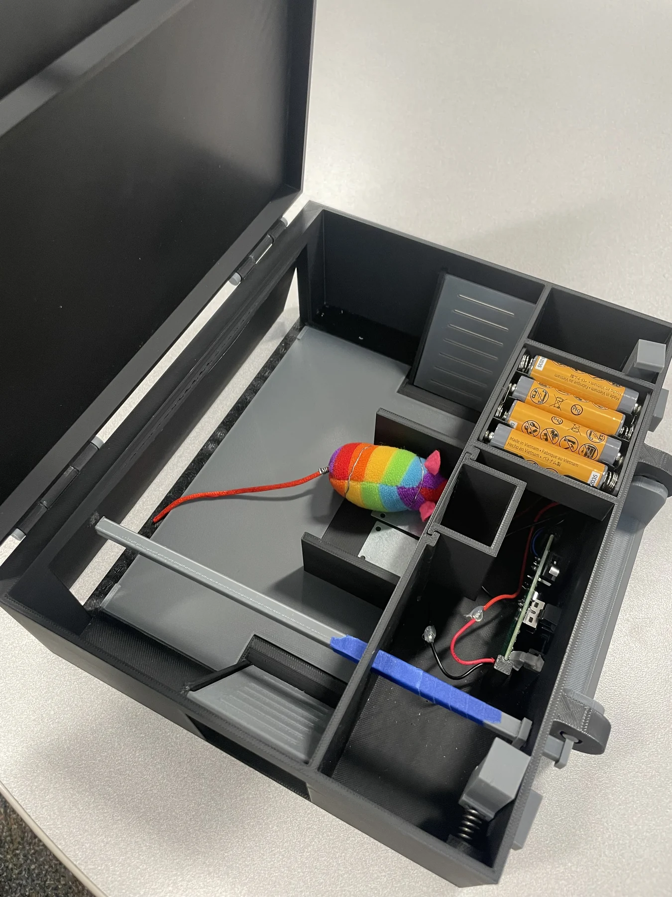
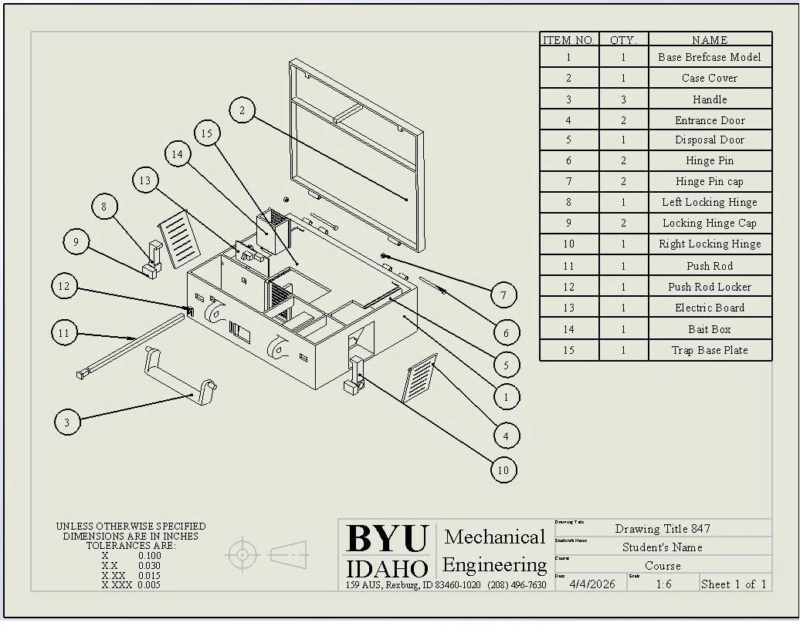
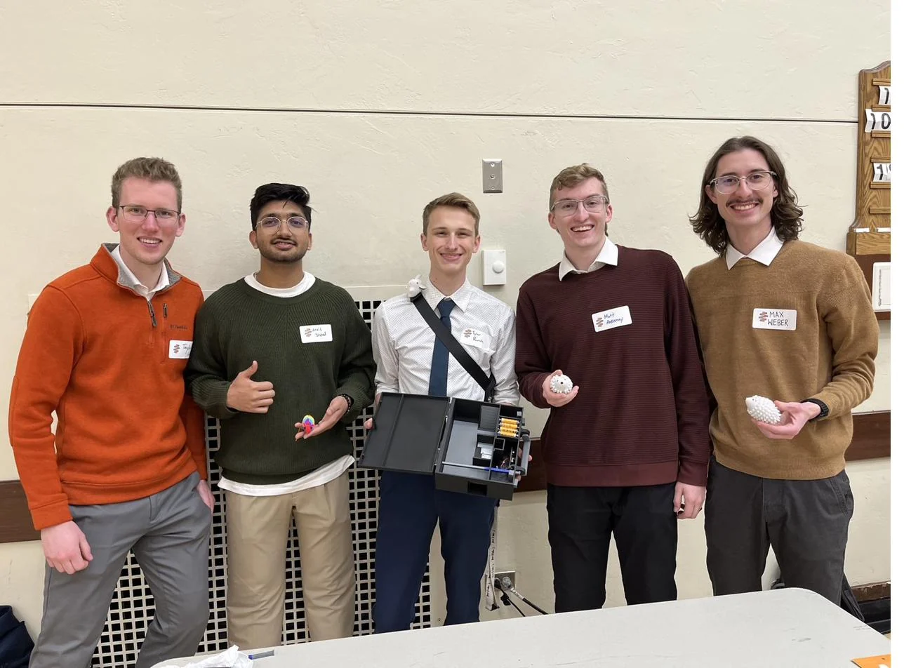

Mechatronics · Team Project
Automated Rat Trap
A self-resetting rat trap built into a discreet briefcase-style case. A rat enters through a one-way door, completes a circuit on an electrified plate, and receives a lethal shock; a magnetic disposal door lets the user clear it without seeing or touching it. Modeled in SolidWorks, 3D printed, and wired as a team.
SolidWorksMechatronicsTeam ProjectEnclosure DesignBOM3D PrintingPatent Search

Key Specs
- Form factor: briefcase enclosure, 7.5 × 10 × 3 in · 3D printed
- Entry: one-way door — rat enters, can't escape
- Kill: humane electric shock (contact plate)
- Disposal: hands-free magnetic drop door — nothing to see or touch
- Maintenance: detachable base plate for easy cleaning
- Safety: power disconnects when the case is opened
- Indicator: LED kill light · auto-resets after disposal
- Cost: built for under $120
Overview
The automated rat trap is a humane, hands-off pest device built into a briefcase-style case that doesn't look like a trap. A rat enters through a one-way door, steps onto an electrified plate, and completes a circuit designed to deliver a lethal shock; an LED signals the kill. To clear it, the user pushes a manual rod that opens a magnetic disposal door underneath, dropping the rat out without anyone seeing or touching it. The base plate detaches for cleaning, and a safety interlock cuts power whenever the case is opened. Once emptied, the trap resets itself for the next catch.
Problem
Standard rat traps are unpleasant in every way — you see the kill, touch the carcass, and reset the mechanism by hand, and most of them obviously look like traps. We set out to design something touchless, discreet, and automated: a device that kills quickly and humanely, hides the result, resets on its own, and looks like an ordinary case so it can sit out in a living space.
Constraints
The design had to solve several problems at once. The entrance needed to let a rat in but never back out, which meant a reliable one-way mechanism. The bait had to sit where it would draw the rat fully onto the contact plate. The base had to detach for cleaning between uses. And for safety, the live contacts couldn't stay powered while the case was open. All of this had to fit inside a compact 7.5 × 10 × 3-inch enclosure that still looked like an ordinary briefcase.
My Role
This was a team project, but I was the most invested member and worked across nearly every part of it. I handled CAD modeling of the case and mechanism, background research, the patent search, the project proposal, and the bill of materials. Being involved end-to-end meant I saw how the mechanical design, the electronics, and the documentation all had to line up for the device to work.
Process
We modeled the enclosure and internal components in SolidWorks, and the hardest parts weren't the electronics — they were the mechanical details. We designed a one-way entrance so a rat could enter but not escape, iterated on bait placement until it reliably drew the rat onto the contact plate, and made the base plate detachable so the trap could be emptied and cleaned. We also added a safety interlock that disconnects power whenever the case is opened from the top, so the live contacts are never exposed while someone is handling it. We ran a patent search to check prior art, documented the full assembly in a bill of materials, and brought the whole device together for under $120.
What I learned
The real challenge wasn't packing in the electronics — it was the mechanical design around them. A dependable one-way entrance, the right bait placement, and an easy-to-clean base each took several iterations. The detail we're most proud of is the safety interlock: cutting power the moment the case opens turned a live electrical device into something safe to handle. We validated the trap through the mechanism rather than on a live animal, but the full sequence — enter, shock, indicate, dispose, reset — worked as designed.
Evidence plates
Photos, CAD, and build artifacts.

